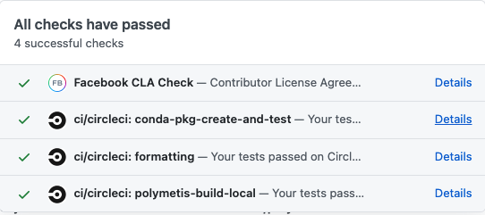
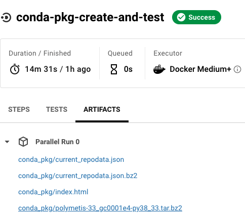

Installation¶
We recommend mamba as a faster drop-in replacement for conda. After installing
mamba(conda install mamba -n base -c conda-forge), simply substitutemambaforcondain all of the following instructions.
Simple¶
From Anaconda¶
Activate a conda environment with
python=3.8:conda activate polymetis
If you don’t have one yet, create one with the proper Python version:
conda create -n polymetis python=3.8
Install polymetis using conda. This should pull the latest successful build from
mainbranch.conda install -c pytorch -c fair-robotics -c aihabitat -c conda-forge polymetis
Note: We build the conda package with the libfranka v0.9.0, which requires Franka Control Interface (FCI) version >=4.2.1. If you have a different version of FCI, consider building from source with the compatible version of libfranka (see below).
For advanced users & developers¶
From source¶
Clone repo:
git clone git@github.com:facebookresearch/fairo cd fairo/polymetisCreate environment
conda env create -f ./polymetis/environment.yml conda activate polymetis-local
Install Python package in editable mode:
pip install -e ./polymetis
Build from source:
Optionally, build libfranka for use on Franka Panda hardware:
# Build libfranka ./scripts/build_libfranka.sh # OPTIONAL: Build custom version of libfranka instead ./scripts/build_libfranka.sh <version_tag_or_commit_hash>
Optionally, install the CUDA-enabled version of PyTorch (by default, only the CPU version is enabled).
Build Polymetis from source:
mkdir -p ./polymetis/build cd ./polymetis/build cmake .. -DCMAKE_BUILD_TYPE=Release -DBUILD_FRANKA=[OFF/ON] -DBUILD_TESTS=[OFF/ON] -DBUILD_DOCS=[OFF/ON] make -j
Start developing! Remember to rebuild if modifying C++ source code. When updating, you may need to do a
conda env update --file ./polymetis/environment.yml --pruneto update dependencies.
From a local conda package¶
We rebuild a new conda package during CI on every pushed commit, and store it as an artifact in CircleCI. If you’re trying to debug a particular commit, you may want to install the generated Conda package locally.
For the commit you’re interested in, select the “Details” of the
conda-pkg-create-and-testtest:
Click the “Artifacts” tab, and download the
polymetis*.tar.bz2file generated by CircleCI:
In a fresh conda environment, install the package:
Create a fresh conda environment:
conda create -n polymetis-test python=3.8 conda activate polymetis-test
Update the local channel:
cd polymetis/polymetis PKG_PATH=/path/to/downloaded/polymetis*.tar.bz2 ./conda/build_conda_package.sh
Install polymetis from the local channel:
conda install -c file://$(eval pwd)/conda/channel \ -c pytorch \ -c fair-robotics \ -c aihabitat \ -c conda-forge \ polymetis